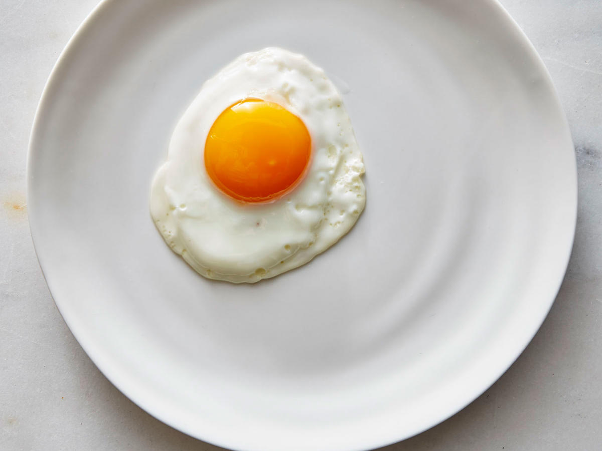

Sunny Side Up Eggs

Description
Here's how to cook sunny side up eggs properly.
Ingredients
- Eggs
- Olive or Canola Oil
- Salt
- Pepper
Steps
- Preheat the nonstick pan/skillet over medium-low heat
- Gently crack eggs into the pan. If the eggs make a hissing sound or the whites bubble, turn down the heat.
- Cook for 3 minutes or until the whites are mostly set, with some still-runny whites near the yolks.
- Tilt the pan forward so that the remaining oil pools. Dip a spoon into the the oil and gently baste the uncooked patches of white until they're set. Don't baste the yolks.
- Add preferred seasoning
- Remove the eggs from the pan